| Alumno | Iván Gutiérrez Mateos |
| Curso | 2º Desarrollo de Aplicaciones Web |
| Centro | IES Kursaal (Cádiz) |
| Fecha | 11 de noviembre de 2026 |
| Sitio | http://www.wordpresspruebas.com.mialias.net (CDMON) |
He puesto como título Aeviternus Automation y como descripción corta (104 caracteres, hace de meta description): "Webs potentes, digitalización y automatización para empresas. Tu departamento tecnológico externalizado." El idioma es Español, la zona horaria Madrid, la fecha en formato largo español (j \d\e F \d\e Y → 11 de noviembre de 2026), la hora en 24 h (H:i) y la semana empieza el lunes.
Registro libre deshabilitado: he dejado desmarcado "Cualquiera puede registrarse". Es un sitio corporativo donde solo trabaja el equipo; con el registro abierto cualquiera (o un bot) podría crearse una cuenta, lo que genera spam y amplía la superficie de ataque. Los usuarios los crea el administrador.
Dirección de WordPress (URL) vs. Dirección del sitio (URL): la primera es donde están instalados los archivos de WordPress (wp-admin, wp-includes...); la segunda es la que escriben los visitantes para ver la web. Normalmente coinciden, pero pueden ser distintas si WordPress se instala en una subcarpeta (por ejemplo /wp) y queremos que la web se vea en la raíz del dominio.
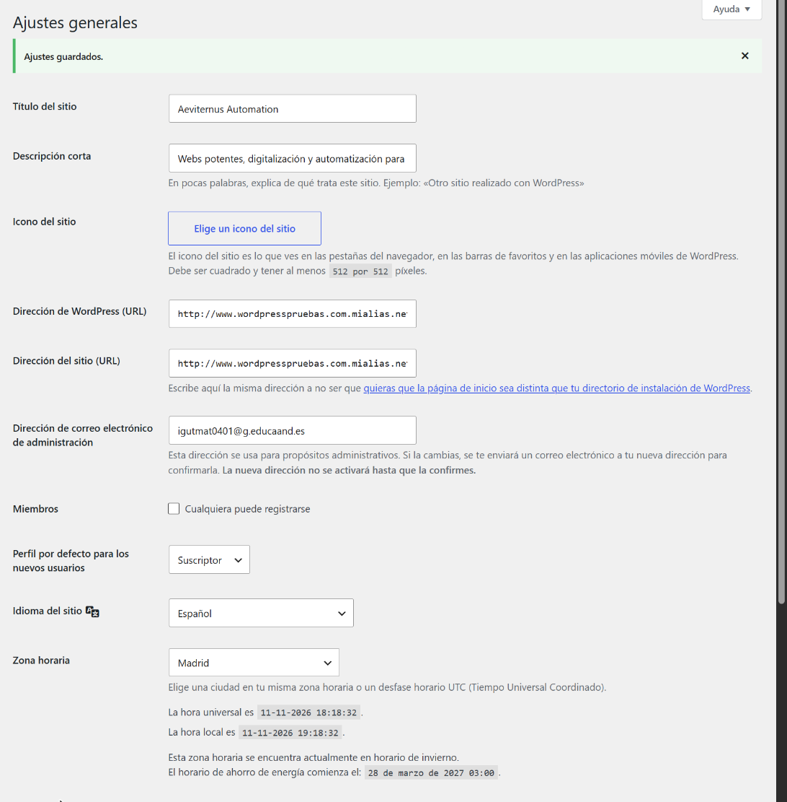
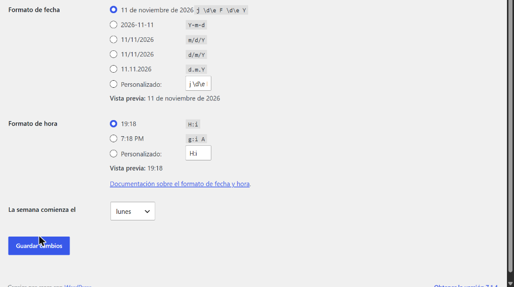
He creado las categorías Artículos, Auditorías y Automatización, y he puesto Artículos como categoría predeterminada (más genérica que "Sin categoría"). El resto queda por defecto.
rpc.pingomatic.com es un servicio de actualización (ping): cada vez que se publica una entrada, WordPress le avisa y Ping-O-Matic reenvía el aviso a buscadores y directorios de blogs para que sepan que hay contenido nuevo y lo indexen antes.
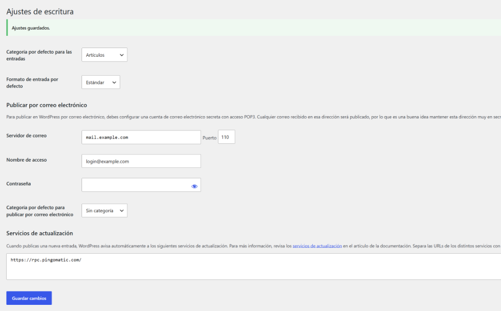
He creado las páginas Inicio (con un texto breve de bienvenida), Blog (vacía), Quiénes somos y Contacto, con contenido genérico provisional. La portada es la página estática "Inicio" y las entradas se muestran en "Blog": 5 por página y 10 en el feed RSS, solo con el extracto.
"Pedir a los motores de búsqueda que no indexen este sitio" está desmarcado. En un sitio en producción es importante: si se queda marcado, WordPress añade noindex y Google no muestra la web, así que nadie la encontraría buscando.
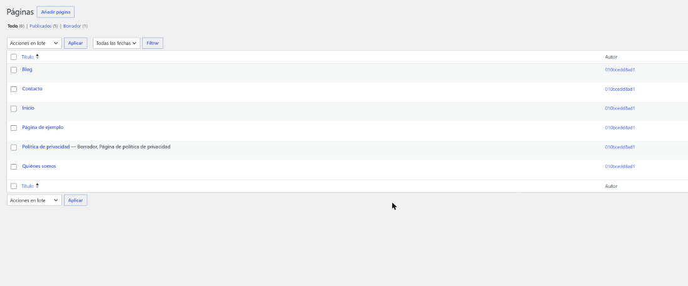
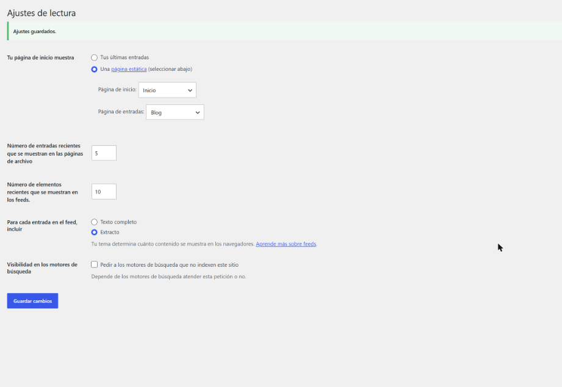
Desde Opciones de pantalla he ocultado los widgets "Eventos y noticias de WordPress" y "Borrador rápido", que no aportan al trabajo diario. Los widgets restantes los he organizado en 2 columnas arrastrándolos (WPForms y Elementor a la izquierda; De un vistazo, Actividad y Estado de salud a la derecha). En Usuarios → Perfil he cambiado el esquema de color a Medianoche.
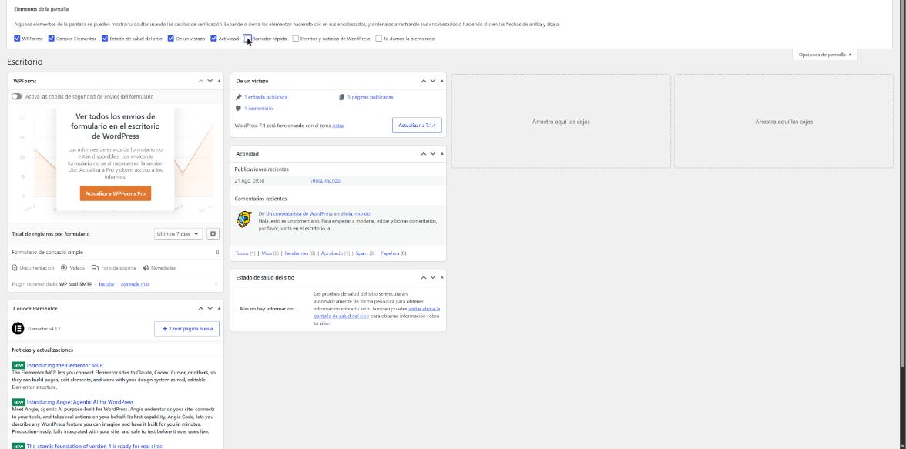
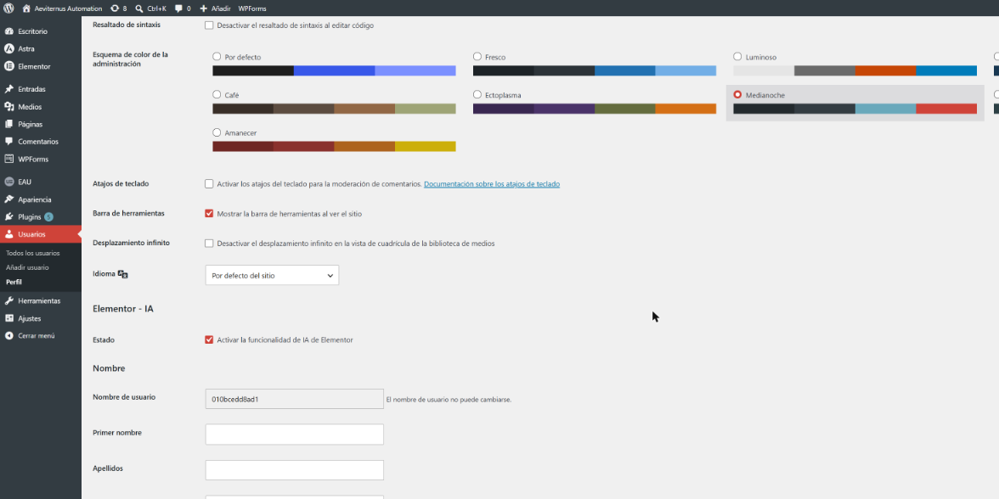
| Atajo | Qué hace |
|---|---|
| Shift + Alt + C | Añadir un nuevo comentario |
| Shift + Alt + M | Añadir un nuevo medio (subir un archivo a la biblioteca) |
| Shift + Alt + P | Añadir una nueva página |
He creado 5 usuarios con el patrón rol.nombre y correos ficticios @aeviternus.local. Las contraseñas son las que genera WordPress (24 caracteres con mayúsculas, minúsculas, números y símbolos, calificadas como "Fuerte"). El nombre público de cada uno es su nombre y apellido, no el login, y el Editor y el Autor tienen biografía. No he enviado el aviso por correo porque las direcciones son ficticias.
| Rol | Nombre de usuario | Nombre a mostrar | Justificación del rol |
|---|---|---|---|
| Administrador | admin.ivan | Iván Gutiérrez | Responsable técnico y dirección del proyecto |
| Editor | editor.lucia | Lucía Romero | Responsable de contenidos: revisa, publica y modera |
| Autor | autor.daniel | Daniel Ortega | Redactor de la sección de auditorías web |
| Colaborador | colaborador.marta | Marta Vidal | Colaboradora esporádica (artículos invitados) |
| Suscriptor | suscriptor.pablo | Pablo Serrano | Lector registrado para comentar |
El usuario administrador que creó CDMON en la instalación (010bcedd8ad1) no se puede renombrar desde WordPress; por eso el administrador que sigue la política de nombres es admin.ivan.
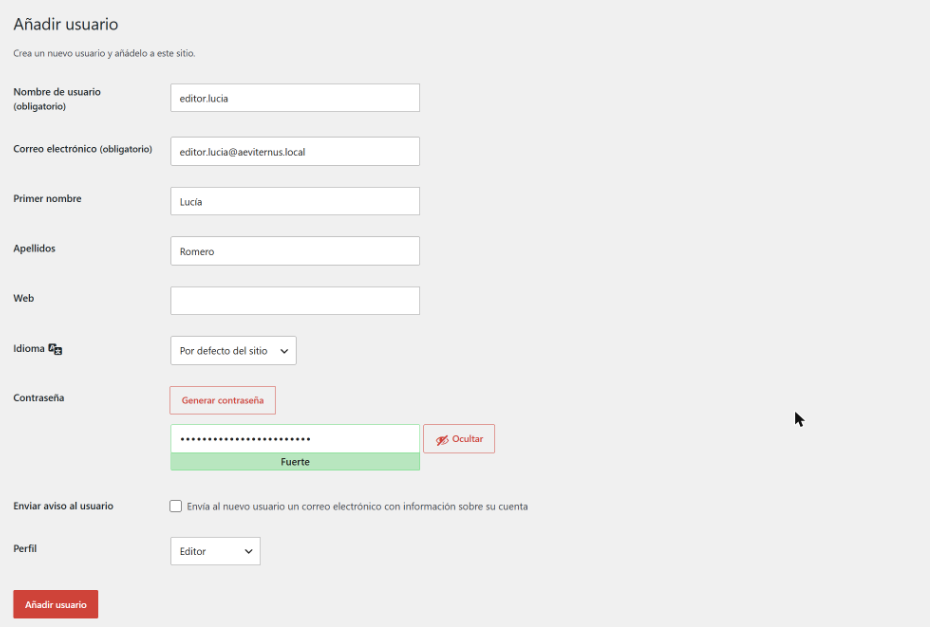
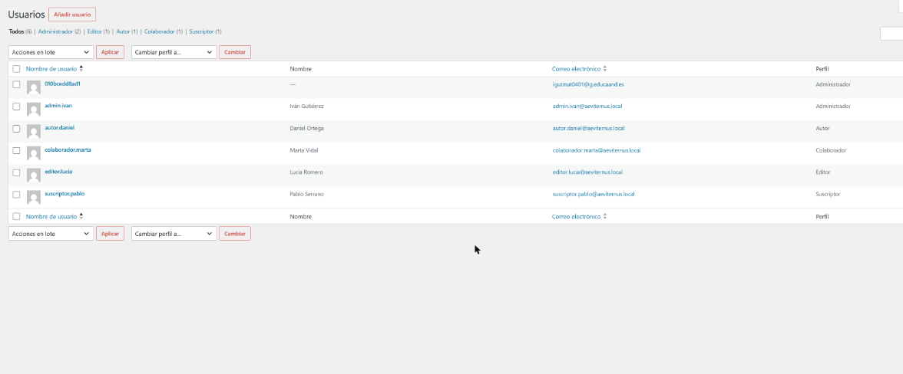
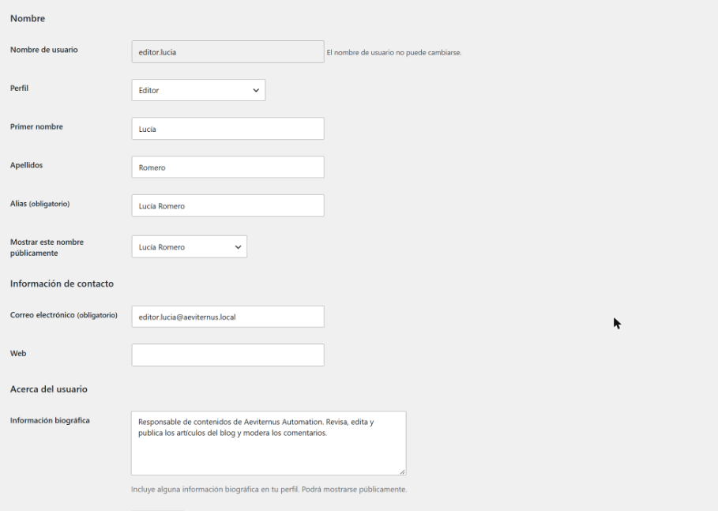
Para iniciar sesión con cada rol sin escribir contraseñas he usado el plugin User Switching, que permite al administrador cambiar a otro usuario y volver con un clic.
Puede crear y guardar entradas, pero en lugar de "Publicar" solo aparece "Enviar para revisión". Su menú solo tiene Escritorio, Entradas, Comentarios, Perfil y Herramientas (más Elementor): no ve Páginas, Medios, Ajustes ni Usuarios, y el editor le avisa de que no tiene permiso para subir medios.
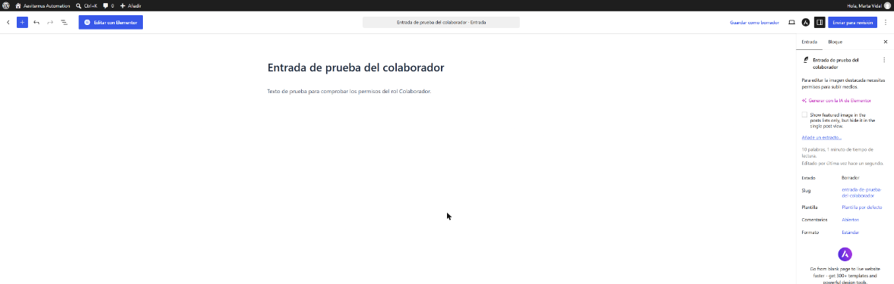
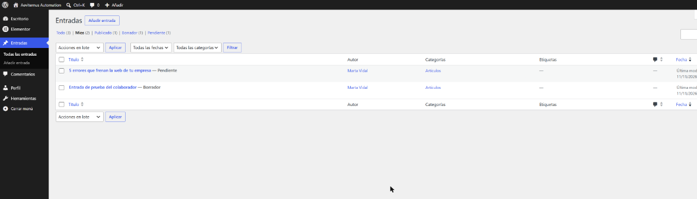
Aparece el botón "Publicar" y su entrada "Qué revisamos en una auditoría web" queda publicada directamente, sin revisión.
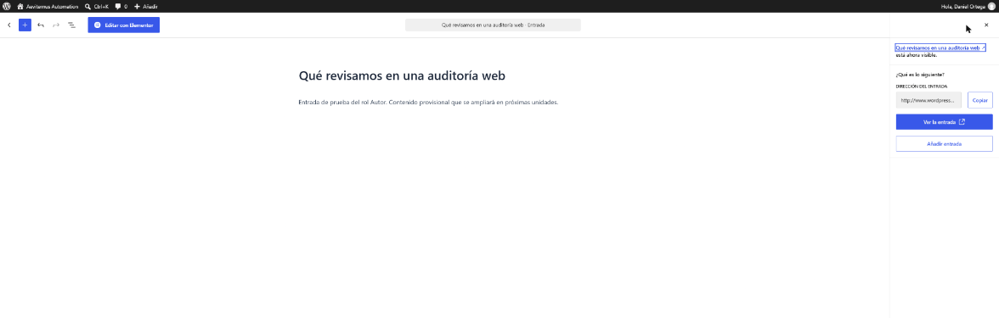
Puede editar y publicar entradas de otros usuarios y moderar comentarios (ver Tarea 6), pero en su menú no existen Ajustes ni Usuarios, y si entra por URL en Ajustes WordPress responde "no tienes permisos para acceder a esta página".
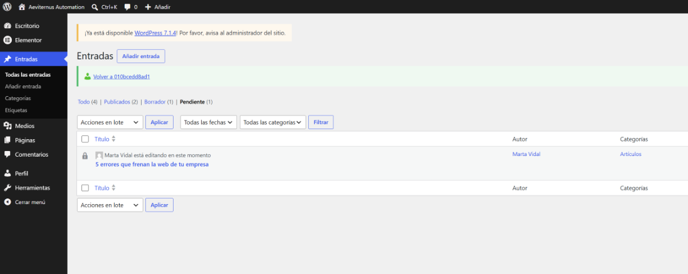
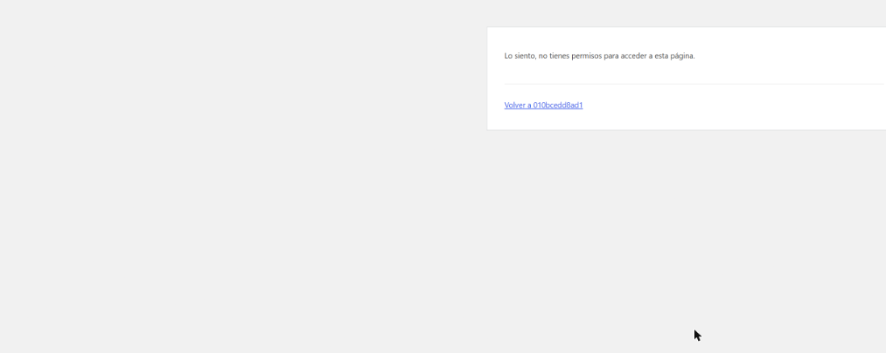
| Capacidad comprobada | Suscriptor | Colaborador | Autor | Editor | Admin. |
|---|---|---|---|---|---|
| Leer entradas y páginas publicadas / comentar | Sí | Sí | Sí | Sí | Sí |
| Crear y editar sus propias entradas | - | Sí | Sí | Sí | Sí |
| Publicar sus propias entradas | - | - (solo enviar a revisión) | Sí | Sí | Sí |
| Subir archivos (menú Medios) | - | - | Sí | Sí | Sí |
| Editar y publicar entradas de otros | - | - | - | Sí | Sí |
| Administrar categorías y etiquetas | - | - | - | Sí | Sí |
| Moderar comentarios | - | - | - | Sí | Sí |
| Acceder a Ajustes y Usuarios | - | - | - | - | Sí |
Comparación con la matriz de la página 12 del PDF (2.10 Permisos detallados por rol): lo observado coincide con la matriz. El Colaborador solo puede editar sus entradas (no publicarlas ni subir archivos), el Autor ya publica y sube archivos, el Editor añade moderar comentarios, gestionar categorías/etiquetas y editar contenido ajeno, y solo el Administrador puede gestionar usuarios, temas, plugins y ajustes. La columna de Super Administrador no aplica porque el sitio no es una red multisitio.
1. Colaborador: Marta crea la entrada "5 errores que frenan la web de tu empresa" y la envía a revisión; queda en estado Pendiente.
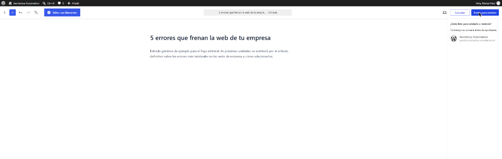
2. Editor: Lucía revisa la entrada, le asigna la categoría Auditorías y la etiqueta errores web, y la publica (la autora sigue siendo Marta).
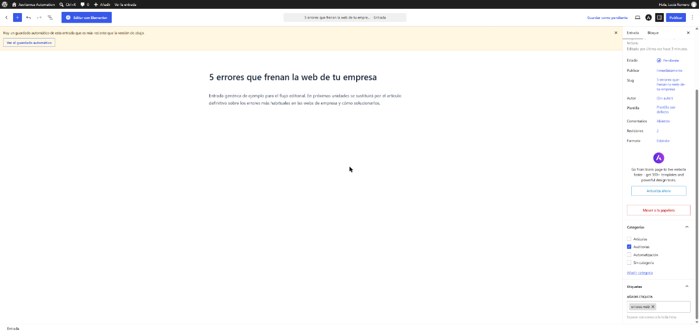
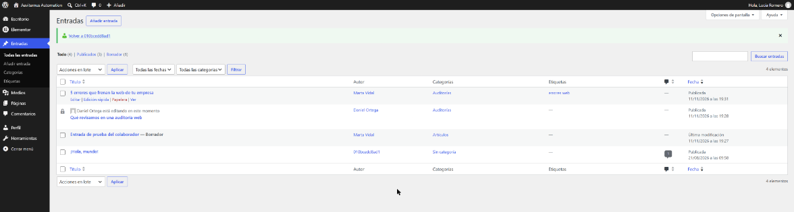
3. Suscriptor: los comentarios ya estaban abiertos. Pablo entra en la web y comenta la entrada; como es su primer comentario, queda pendiente de moderación.
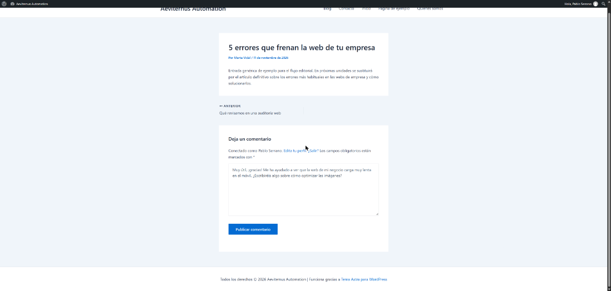
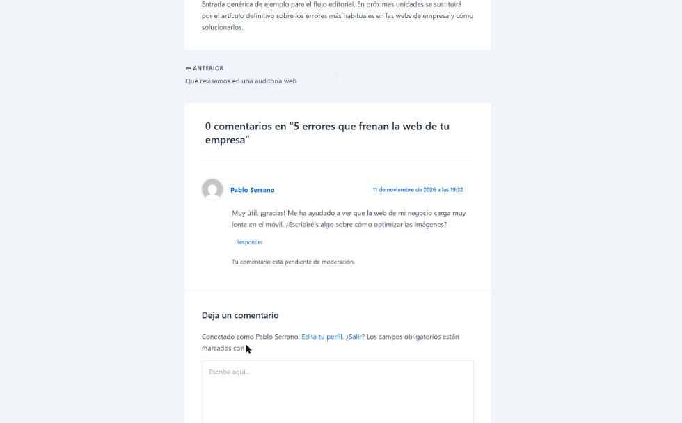
4. Editor: Lucía ve el comentario pendiente en Comentarios y lo aprueba.
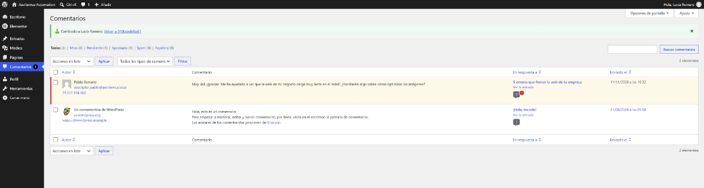
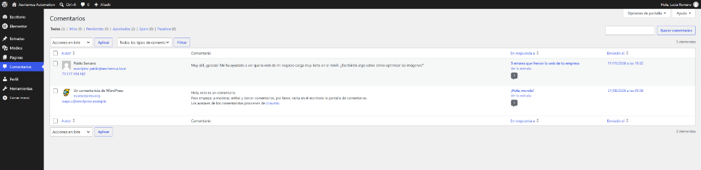
Qué he aprendido: que buena parte de la seguridad y del orden de un sitio WordPress se decide en los ajustes iniciales y en los roles. Con el principio de menor privilegio cada persona tiene solo lo que necesita: el colaborador no puede publicar sin revisión, el autor no toca el trabajo de otros y solo el administrador cambia la configuración. También he visto cómo un flujo editorial real (redactar, revisar, publicar y moderar) encaja con esos roles.
Dificultades y cómo las he resuelto:
AuthType Basic configured without corresponding module); lo resolví entrando desde el enlace "Acceder a la página" del panel de CDMON.